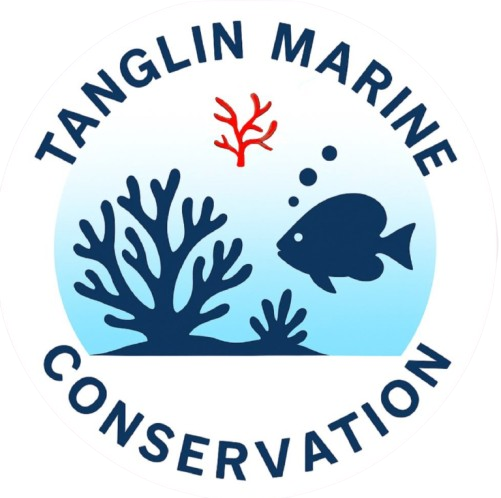

Tanglin Marine Conservation
Home
About
Resources
OrcaNation Blog
Coral Restaration
World Wildlife Fund
Reef World Foundation
Team
Contact
Protecting oceans, preserving coral
Coral reefs shelter 25% of all marine life — and they need us now.